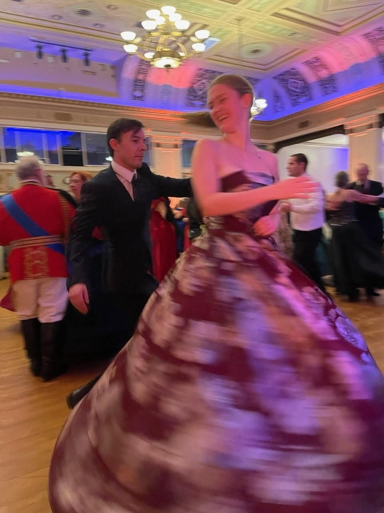

School
I am a 4th year student at Cal Poly University, majoring in Business Administration with a
concentration in Quantitative Analysis. I am also triple minoring in Dance, Statistics and
Computer Science!
My Last Courses at Cal Poly
- CSC 437
- Dynamic Web Development
- CSC 480
- Artificial Intelligence
- BUS 421
- Marketing Analytics and Business Intelligence
- DANC 346
- Dance Production
- DANC 430
- Advanced Selected Techniques
Hobbies
Favorite things to do outside of school:
- Bake pasteries like scones, bagels and pizza!
- Weightlift with my best friend Talia
- Video call with my sisters
- Go out dancing with my boyfriend
